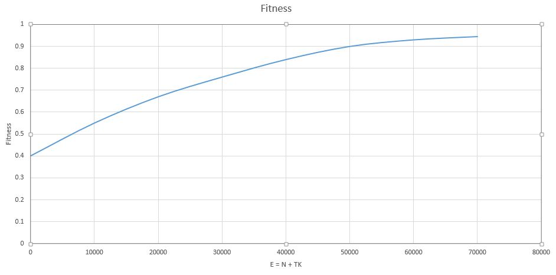

N=4, K=2 gave the best result

N=4, K=1 gave the best result

N=2, K=1 gave the best result

N=1, K=2 gave the best result


N=2, K=1 gave the best result

N=2, K=1 gave the best result
EECS 492 A1 Results
Ashran Bakth
October 2, 2015
The purpose of this project is to recreate Roger Alsing's work on genetic programming to create art. The population consists of approximations to a given image. Each image uses P polygons, where P=100 for the results on this page. N is the population size and K is the number of new children created per generation. T is the number of generations displayed in each animation. The fitness of the image is a measure of how closely it matches the original image. The learning curve shows how the fitness of the best approximation improves over time. The 3D graphs depict how the fitness after 25000 generations varies with N and K.
| Original image | Approximation | Learning curve | ||
|---|---|---|---|---|
| 96×96 pixels |
P=100, N=1, K=2, E=50,000 |
N=4, K=2 gave the best result | ||
| 100×100 pixels |
P=100, N=1, K=2, E=50,000 |
 | N=4, K=1 gave the best result | |
| 100×100 pixels |
P=100, N=1, K=2, E=50,000 |
N=2, K=1 gave the best result |
||
| 220×220 pixels |
P=100, N=1, K=2, E=50,000 |
N=1, K=2 gave the best result |
||
| 256×256 pixels |
P=100, N=1, K=2, E=50,000 |
N=2, K=1 gave the best result |
||
| 236×236 pixels |
P=100, N=1, K=2, E=50,000 |
N=2, K=1 gave the best result |
Mutations used:
Random colors were picked using uniform distribution over the RGB color space.
Parents were picked randomly by using a uniform distribution.